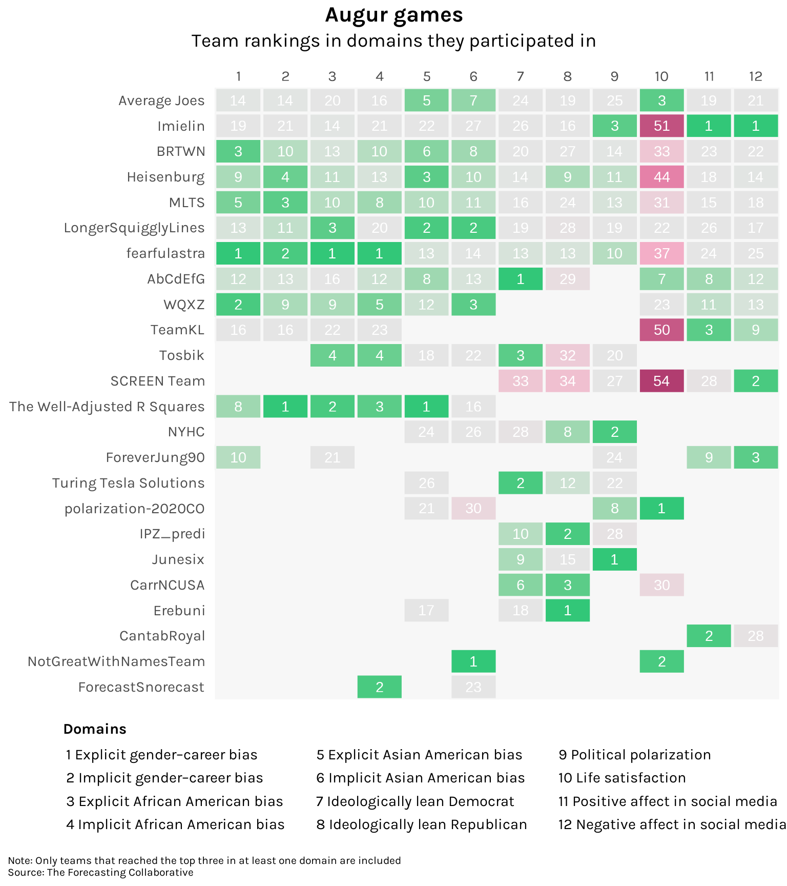

library(tidyverse)
root <- "https://raw.github.com/ksreyes/Forecasting-Tournament/main"
files <- c("dat_for_analyses.csv", "wave1.scores.csv", "historical_data.csv")
dat_for_analyses <- file.path(root, files[1]) %>%
read_csv()
wave1_scores <- file.path(root, files[2]) %>%
read_csv()
historical_data <- file.path(root, files[3]) %>%
read_csv()Telling the future is hard
A forecasting tournament put the predictive powers of social scientists to the test. They, ah, didn’t do so well.
R
ggplot
D3/OJS
Do you want to excel at telling the future? Nostradamus shows us one way: make your predictions as vague and ambiguous as possible and you will always be “right”. Try attaching a 40% probability to all your calls: if you’re wrong, hey, you never said it was a sure thing. Throw in some authoritative-sounding statements like “the next six months will be decisive”, as Thomas Friedman said, repeatedly, for two and a half years, about the Iraq War. And whatever you do, never corner yourself with a weirdly specific, absurdly bold prediction like “the Internet’s impact on the economy will be no greater than the fax machine’s”. You will never live it down.
Alternatively, you can take the hard way and actually become an expert in the field. Then you can use superior domain knowledge to make superior predictions. Or can you?
The Forecasting Collaborative is a project spearheaded by Igor Grossmann and Amanda Rotella from the University of Waterloo. They invited almost 200 experts in the social sciences to forecast various measures of societal change in the United States over the course of 12 months — things like political polarization, attitudes to racial minorities, and so on. Crucially, the time frame was from May 2020 to April 2021, a tumultuous period covering the first year of the pandemic, the George Floyd protests, a presidential election, and the January 6 riots.1 To benchmark how the experts performed, forecasts were also obtained from 800 non-experts and naive approaches like historical averaging. If domain knowledge makes for superior forecasts, then experts should easily outperform.
Alas. Results published last month in Nature Human Behavior2 found that experts’ forecasts were generally no more accurate than non-experts and naive methods. Let’s explore the data, made available by the researchers on GitHub and forked by me.
The table below lists all the forecasting teams who participated, along with their discipline, how many members they had, and, if available, some demographic information. Now I love a good team name, and I will be remiss not to mention some standouts. There’s a team of four called The Forecasting Four and a team of five called 5casters. Kudos to The Well-Adjusted R Squares for being well-adjusted and to ForeverJung90 for being forever Jung. It looks like 4 chimps with a dart and Abracadabra named themselves after their methods. And to whoever registered himself as Cynical Belief in the Inexorable Crush of the Wheel — I hope you made T-shirts.
Code
library(reactable)
teams <- dat_for_analyses %>%
filter(isExpert == 1) %>%
mutate(team_education_inv = 100 - team_education) %>%
select(team_name, discipline, team_size.coded, team_Age, team_gender, team_education_inv, non_US) %>%
distinct() %>%
arrange(team_name)
teams %>%
reactable(
defaultColDef = colDef(
align = "center",
headerStyle = list(fontFamily = "Karla", background = "#f7f7f8"),
sortNALast = TRUE,
format = colFormat(digits = 0)
),
columns = list(
team_name = colDef(name = "Team name", minWidth = 250, align = "left"),
discipline = colDef(name = "Disicipline", minWidth = 200, align = "left"),
team_size.coded = colDef(name = "Members", minWidth = 110),
team_Age = colDef(name = "Average age", minWidth = 110),
team_gender = colDef(name = "Share not male", minWidth = 110),
team_education_inv = colDef(name = "Share with Ph.D", minWidth = 110),
non_US = colDef(name = "Share not US", minWidth = 110)
),
minRows = 5,
searchable = TRUE,
bordered = TRUE,
highlight = TRUE,
theme = reactableTheme(
searchInputStyle = list(align = "left")
)
)Let’s visualize how these teams did in their forecasting. The preferred measure of the paper is mean absolute scaled error, or MASE, a metric that can be compared across different variables despite different scales. The higher the MASE, the worse the forecast. Let’s first do some data wrangling on R.
Code
domains_key <- tibble(
domain = c(
"egend",
"igend",
"eafric",
"iafric",
"easian",
"iasian",
"ideoldem",
"ideolrep",
"polar",
"lifesat",
"posaffect",
"negaffect"
),
domain_long = c(
"Explicit gender–career bias",
"Implicit gender–career bias",
"Explicit African American bias",
"Implicit African American bias",
"Explicit Asian American bias",
"Implicit Asian American bias",
"Ideologically lean Democrat",
"Ideologically lean Republican",
"Political polarization",
"Life satisfaction",
"Positive affect in social media",
"Negative affect in social media"
),
order = as.integer(1:12)
)
sort <- tibble(
method = c(
"All experts",
"Intuition/theory",
"Data-driven",
"Hybrid",
"Non-experts"),
order = 1:5
)
scores_all <- wave1_scores %>%
left_join(
dat_for_analyses %>%
select(!starts_with("Month.")),
by = c("team_name", "Method.code", "domain", "MASE1_w1")
) %>%
left_join(domains_key, by = "domain") %>%
mutate(method = case_when(
is.na(isExpert) ~ "Non-experts",
TRUE ~ str_to_sentence(Method.code)
)
)
scores <- scores_all %>%
filter(isExpert == 1) %>%
select(team_name, method, domain_long, MASE1_w1) %>%
left_join(sort) %>%
arrange(order)
medians <- scores_all %>%
group_by(domain_long, method) %>%
summarize(MASE1_w1 = median(MASE1_w1)) %>%
ungroup() %>%
bind_rows(
scores %>%
group_by(domain_long) %>%
summarize(MASE1_w1 = median(MASE1_w1)) %>%
ungroup() %>%
mutate(method = "All experts")
) %>%
left_join(sort) %>%
arrange(order)
ojs_define(scores_ojs1 = scores)
ojs_define(medians_ojs1 = medians)The function ojs_define() ports our data over to Observable JS, through which we construct an interactive chart:
Code
scores_ojs = transpose(scores_ojs1)
medians_ojs = transpose(medians_ojs1)
domains = [
"Explicit gender–career bias",
"Implicit gender–career bias",
"Positive affect in social media",
"Implicit Asian American bias",
"Political polarization",
"Explicit Asian American bias",
"Ideologically lean Democrat",
"Life satisfaction",
"Negative affect in social media",
"Explicit African American bias",
"Implicit African American bias",
"Ideologically lean Republican"
]
viewof median_radio = Inputs.radio(
d3.group(medians_ojs, d => d.method),
{ key: "All experts", label: html`<b>Median</b>` }
)
viewof mase_range = Inputs.range(
[3, d3.extent(scores_ojs, d => d.MASE1_w1)],
{ step: .5, value: 25, label: html`<b>MASE max</b>`, format: x => x.toFixed(0) }
)
addTooltips(
Plot.plot({
marks: [
Plot.frame({ fill: "#f7f7f7" }),
Plot.dot(scores_ojs, {
x: "MASE1_w1",
y: "domain_long",
title: "team_name",
r: 7,
fill: "method",
fillOpacity: 0.5,
}),
Plot.dot(median_radio, {
x: "MASE1_w1",
y: "domain_long",
r: 7,
stroke: "black",
strokeWidth: 2,
}),
],
x: {
label: "Mean absolute scaled error",
labelAnchor: "center",
tickSize: 0,
grid: false,
domain: [0, mase_range],
},
y: {
label: null,
tickSize: 0,
grid: true,
padding: 0,
domain: domains,
},
color: {
legend: true,
domain: ["Intuition/theory", "Data-driven", "Hybrid"],
range: ["#B13D70", "#7fc6a4", "#4889ab"],
},
width: 800,
height: 450,
marginLeft: 215,
marginRight: 10,
marginBottom: 50,
insetLeft: 5,
insetTop: 20,
insetBottom: 20,
})
);It’s clear that some variables were harder to forecast than others. The evolution of explicit gender-career bias (i.e. the explicit association of certain genders with certain careers) was forecasted with relatively small errors, whereas support for the Republican Party was forecasted with large errors (few anticipated it to shoot up [!]). Implicit bias against African-Americans stands out as being the one nearly all experts (and non-experts) got wrong: the measure, happily, fell down more than anyone anticipated.
The median expert generally had a slight lead over the median non-expert, though not by much. The paper explores the underlying distributions and concludes that experts only had a statistically significant lead in forecasting life satisfaction, polarization, and explicit and implicit gender–career bias; in all other variables, they performed no better than non-experts.
Among experts, it was found that those employing data-driven strategies (either with or without consideration of subject matter theories) performed the best. This reflects well on data scientists but poorly on domain experts. It essentially means that one can get good results by throwing any old variable into a forecasting model without necessarily thinking too hard about the social phenomena behind that variable.
Which team, overall, performed the best? Let’s visualize the rankings of teams across all 12 domains. To keep the chart manageable, let’s only include teams who ranked in the top three of at least one domain. There were 24 such teams in total:
Code
library(ggplot2)
rank <- scores_all %>%
filter(isExpert == 1) %>%
group_by(team_name) %>%
filter(any(Rank <= 3)) %>%
ungroup() %>%
select(team_name, order, domain_long, Rank) %>%
group_by(team_name) %>%
mutate(participated = n()) %>%
ungroup() %>%
arrange(participated) %>%
mutate(
team_name = factor(team_name, levels = unique(team_name)),
domain_label = paste(order, domain_long) %>%
factor(levels = paste(domains_key$order, domains_key$domain_long))
)
rank %>%
ggplot(aes(x = order, y = team_name, fill = Rank, alpha = domain_label)) +
geom_tile(color = "gray97", linewidth = 1) +
geom_text(aes(label = Rank), size = 11/.pt, color = "white") +
scale_x_continuous(position = "top", breaks = 1:12, expand = c(0, 0)) +
scale_y_discrete(expand = c(0, 0)) +
scale_fill_gradientn(colors = c("#32C778", "gray90", "gray90", "#f697bb", "#B13D70")) +
scale_alpha_manual(values = rep(1, 12)) +
labs(
title = "Augur games",
subtitle = "Team rankings in domains they participated in",
caption = "Note: Only teams that reached the top three in at least one domain are included\nSource: The Forecasting Collaborative",
) +
guides(
fill = "none",
alpha = guide_legend(
title = "Domains",
title.position = "top",
keywidth = 0,
keyheight = unit(.6, "cm"),
nrow = 4,
override.aes = list(fill = NA)
)) +
theme(
text = element_text(family = "karla"),
axis.title = element_blank(),
axis.ticks = element_blank(),
axis.text.x = element_text(size = 11, margin = margin(b = 5)),
axis.text.y = element_text(size = 11, margin = margin(r = 5)),
legend.key = element_blank(),
legend.text = element_text(size = 11),
legend.title = element_text(size = 11, face = "bold"),
legend.title.align = .03,
legend.position = "bottom",
legend.box.margin = margin(l = -120),
panel.background = element_rect(fill = "gray97", color = NA),
panel.grid = element_blank(),
plot.title.position = "plot",
plot.title = element_text(size = 16, face = "bold", hjust = .5),
plot.subtitle = element_text(size = 14, hjust = .5, margin = margin(b = 12)),
plot.caption = element_text(size = 8, hjust = 0, margin = margin(t = 10)),
plot.caption.position = "plot"
)
In terms of first place finishes, fearfulastra takes the cake with three. However, they performed rather poorly in forecasting life satisfaction. NotGreatWithNamesTeam has the best track record, participating in two domains and getting a first and a second. But the most well-rounded would probably be The Well-Adjusted R Squares, who had four finishes in the top three and whose worst performance was just 16th place.
Let’s chart the forecasts of the best performing expert in each domain against how these variables actually evolved. As a benchmark, let’s also chart the forecasts of the median non-expert.
Code
actual <- historical_data %>%
pivot_longer(cols = negaffect:polar,
names_to = "domain",
values_to = "value") %>%
left_join(domains_key) %>%
mutate(series = "Actual") %>%
select(series, domain_long, month = Month, value)
series <- scores_all %>%
mutate(series = case_when(
isExpert == 1 ~ "Top expert",
is.na(isExpert) ~ "Median non-expert"
)) %>%
pivot_longer(cols = starts_with("Month."),
names_to = "month",
names_prefix = "Month.",
values_to = "value") %>%
mutate(month = as.numeric(month)) %>%
group_by(series, domain_long, month) %>%
filter(Rank == 1 | is.na(Rank)) %>%
ungroup() %>%
select(series, team_name, domain_long, month, value) %>%
bind_rows(actual)
ojs_define(series_ojs1 = series)Code
series_ojs = transpose(series_ojs1)
viewof select = Inputs.select(
d3.group(series_ojs, d => d.domain_long),
{ label: html`<b>Domain</b>` }
)
viewof month_range = Inputs.range(
[d3.extent(series_ojs, d => d.month)[0], -3],
{ label: html`<b>Months prior</b>`, value: -24, step: 1 }
)
domain_unit = (d3.max(select, d => d.value) - d3.min(select, d => d.value)) / 4
addTooltips(
Plot.plot({
marks: [
Plot.frame({ fill: "#f7f7f7" }),
Plot.lineY(
select.filter((d) => d.month > month_range),
{ x: "month", y: "value", stroke: "series", strokeWidth: 2.5 }
),
Plot.dot(
select.filter((d) => d.month > month_range),
{
x: "month",
y: "value",
title: "value",
fill: "series",
r: 5,
stroke: "white",
}
),
Plot.ruleX([0], {
strokeOpacity: 0.9,
strokeWidth: 1,
strokeDasharray: "5,5",
}),
Plot.text(select.slice(0, 1), {
text: (d) => d.domain_long,
textAnchor: "start",
frameAnchor: "top-left",
fontWeight: "bold",
fontSize: 15,
dx: 20,
dy: 18,
}),
Plot.text(select.slice(0, 1), {
text: (d) => `Top expert: ${d.team_name}`,
textAnchor: "start",
frameAnchor: "top-left",
fontSize: 14,
dx: 20,
dy: 39,
}),
],
x: {
label: "Month",
labelAnchor: "center",
tickSize: 0,
},
y: {
label: null,
ticks: 5,
tickSize: 0,
domain: [
d3.min(select, (d) => d.value) - domain_unit,
d3.max(select, (d) => d.value) + domain_unit,
],
},
color: {
legend: true,
range: ["#bcbcbc", "#B13D70", "#0C6291"],
},
width: 800,
height: 450,
insetTop: 20,
insetBottom: 20,
insetRight: 20,
insetLeft: 20,
marginBottom: 50,
marginLeft: 45,
marginRight: 0,
}),
{ r: 7.5 }
);It’s interesting to see how many of these variables underwent a noticeable shift during the period under study. Negative social media affect — estimated by analyzing tweets — shot up as people stuck at home viciously argued about everything from masks to Black Lives Matter. The conversations around race following the murder of George Floyd translated to drops in the stereotyping of African-Americans and Asian-Americans (though it should be noted that these are based on online surveys and may suffer heavily from selection bias). Forecasts from top-performing experts actually did pretty well; particularly impressive was Erebuni’s anticipation of the bump in Republican support. Incidentally, all their members were non-Americans.
What to make of these results? Perhaps it’s a little unfair to judge social scientists too harshly. It was a once-in-a-century pandemic, no one had any models for this. But at the same time, isn’t it precisely during periods of great uncertainty when guidance from domain experts is needed the most? Don’t tell me now that you were just a bunch of chimps with a dart! 
D3 / Observable code
Code
addTooltips = (chart, styles) => {
const stroke_styles = { stroke: "blue", "stroke-width": 3 };
const fill_styles = { fill: "blue", opacity: 0.5 };
// Workaround if it's in a figure
const type = d3.select(chart).node().tagName;
let wrapper =
type === "FIGURE" ? d3.select(chart).select("svg") : d3.select(chart);
// Workaround if there's a legend....
const svgs = d3.select(chart).selectAll("svg");
if (svgs.size() > 1) wrapper = d3.select([...svgs].pop());
wrapper.style("overflow", "visible"); // to avoid clipping at the edges
// Set pointer events to visibleStroke if the fill is none (e.g., if its a line)
wrapper.selectAll("path").each(function (data, index, nodes) {
// For line charts, set the pointer events to be visible stroke
if (
d3.select(this).attr("fill") === null ||
d3.select(this).attr("fill") === "none"
) {
d3.select(this).style("pointer-events", "visibleStroke");
if (styles === undefined) styles = stroke_styles;
}
});
if (styles === undefined) styles = fill_styles;
const tip = wrapper
.selectAll(".hover")
.data([1])
.join("g")
.attr("class", "hover")
.style("pointer-events", "none")
.style("text-anchor", "middle");
// Add a unique id to the chart for styling
const id = id_generator();
// Add the event listeners
d3.select(chart).classed(id, true); // using a class selector so that it doesn't overwrite the ID
wrapper.selectAll("title").each(function () {
// Get the text out of the title, set it as an attribute on the parent, and remove it
const title = d3.select(this); // title element that we want to remove
const parent = d3.select(this.parentNode); // visual mark on the screen
const t = title.text();
if (t) {
parent.attr("__title", t).classed("has-title", true);
title.remove();
}
// Mouse events
parent
.on("pointerenter pointermove", function (event) {
const text = d3.select(this).attr("__title");
const pointer = d3.pointer(event, wrapper.node());
if (text) tip.call(hover, pointer, text.split("\n"));
else tip.selectAll("*").remove();
// Raise it
d3.select(this).raise();
// Keep within the parent horizontally
const tipSize = tip.node().getBBox();
if (pointer[0] + tipSize.x < 0)
tip.attr(
"transform",
`translate(${tipSize.width / 2}, ${pointer[1] + 7})`
);
else if (pointer[0] + tipSize.width / 2 > wrapper.attr("width"))
tip.attr(
"transform",
`translate(${
wrapper.attr("width") - tipSize.width / 2
}, ${pointer[1] + 7})`
);
})
.on("pointerout", function (event) {
tip.selectAll("*").remove();
// Lower it!
d3.select(this).lower();
});
});
// Remove the tip if you tap on the wrapper (for mobile)
wrapper.on("touchstart", () => tip.selectAll("*").remove());
// Define the styles
chart.appendChild(html`<style>
.${id} .has-title { cursor: pointer; pointer-events: all; }
.${id} .has-title:hover { ${Object.entries(styles).map(([key, value]) => `${key}: ${value};`).join(" ")} }`);
return chart;
};
hover = (tip, pos, text) => {
const side_padding = 10;
const vertical_padding = 5;
const vertical_offset = 25;
// Empty it out
tip.selectAll("*").remove();
// Append the text
tip.style("text-anchor", "middle")
.style("pointer-events", "none")
.attr("transform", `translate(${pos[0]}, ${pos[1] + 7})`)
.selectAll("text")
.data(text)
.join("text")
.style("dominant-baseline", "ideographic")
.text((d) => d)
.attr("y", (d, i) => (i - (text.length - 1)) * 15 - vertical_offset)
.style("font-weight", (d, i) => (i === 0 ? "bold" : "normal"));
const bbox = tip.node().getBBox();
// Add a rectangle (as background)
tip.append("rect")
.attr("y", bbox.y - vertical_padding)
.attr("x", bbox.x - side_padding)
.attr("width", bbox.width + side_padding * 2)
.attr("height", bbox.height + vertical_padding * 2)
.style("fill", "white")
.style("stroke", "#d3d3d3")
.lower();
};
id_generator = () => {
var S4 = function () {
return (((1 + Math.random()) * 0x10000) | 0).toString(16).substring(1);
};
return "a" + S4() + S4();
};